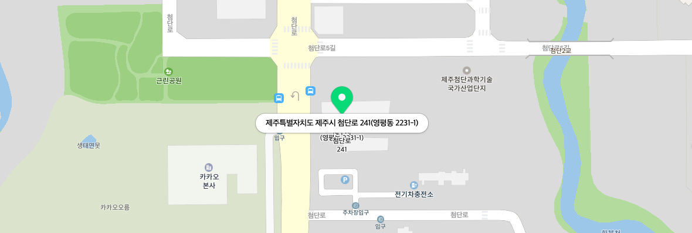

운영 목적
- 목적
-
- 데이터 중심의 혁신 서비스 발굴 및 육성을 통한 경쟁력 강화
- 지역 데이터 활용 활성화를 통한 데이터 산업 생태계 조성
- 역할
-
- 데이터 확보 및 제공
- 데이터 인프라 및 분석 지원
- 데이터 활용 컨설팅, 구매‧가공 지원
주요 사업
-
인프라 및 분석 지원일반인, 창업자, 중소기업을 대상으로
데이터 분석, 활용 컨설팅 및 실습 환경 지원
-
제주데이터허브 운영공공 데이터와 민간 데이터의 융합을 위한
서비스 제공
-
지원사업 수행지역 중소기업 등에
데이터 활용 컨설팅, 구매, 가공 지원
시설현황
제주 빅데이터 센터
-
데이터랩실
- 데이터 거버넌스, 스마트관광, 모빌리티 관련 연구용
- 좌석수 : Lab 1 (4석), Lab 2 (4석), Lab 3 (3석)
- 부대시설 : 화이트보드, TV, 프린터, 휴게실 등
- 운영시간 : 평일 9:00 ~ 18:00
-
일반분석실
- 소규모 프로젝트 및 교육용
- 좌석수 : 10석
- 부대시설 : 빔프로젝트, 마이크, 프린터, 휴게실 등
- 운영시간 : 평일 9:00 ~ 18:00
제주지역 ICT전문인력 양성센터
-
1강의실 (302-1호)
- ICT관련교육용 강의실
- 좌석수: 24석 (+강사석 1석)
- 부대시설: 빔프로젝트, 마이크, 프린터, 레이저포인터, 휴게실 등
- 기본 설치 프로그램: MS Office, 한글
- 운영시간 : 평일 9:00 ~ 18:00
-
3강의실 (303호)
- ICT관련교육용 강의실
- 좌석수: 20석 (+강사석 1석)
- 부대시설: 빔프로젝트, 마이크, 프린터, 레이저포인터, 휴게실 등
- 기본 설치 프로그램: MS Office, 한글
- 운영시간 : 평일 9:00 ~ 18:00
찾아오시는 길

(63309) 제주특별자치도 제주시 첨단로 241, 디지털융합센터 3층 301호
대중교통
- 공항, 제주시청 출발
- 365/360번 간선버스 승차, 제주대학교 하차 → 490번 간선버스 승차, 디지털융합센터에서 하차 → 도착
- 서귀포시 버스터미널 출발
- 281번 간선버스 승차, 양지(추모)공원 하차 → 도보로 약 647m 이동 → 제주국제대학교에서 426/473번 지선버스 승차, 디지털융합센터에서 하차 → 도착